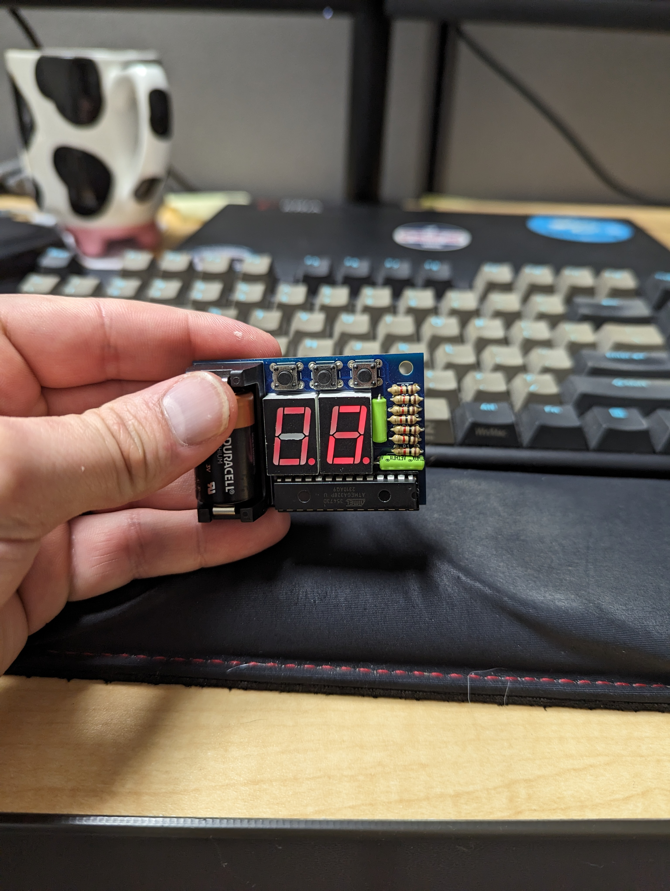
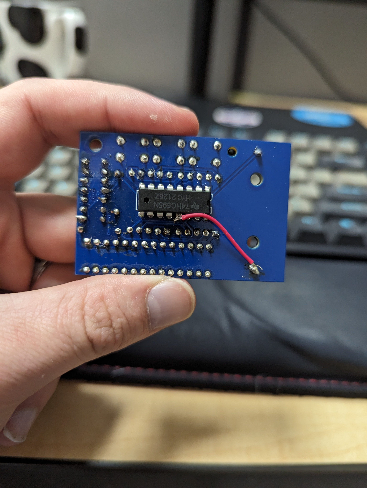
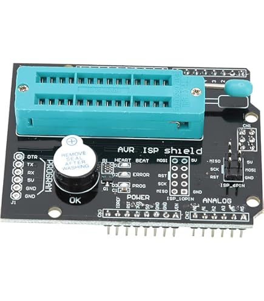
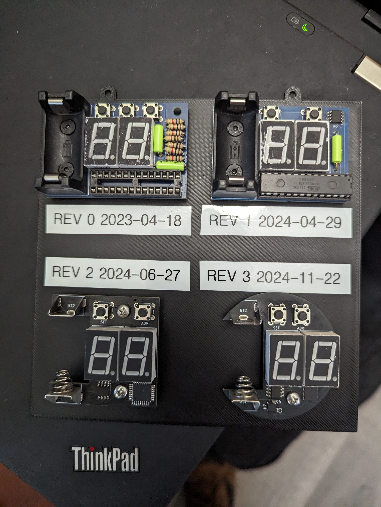
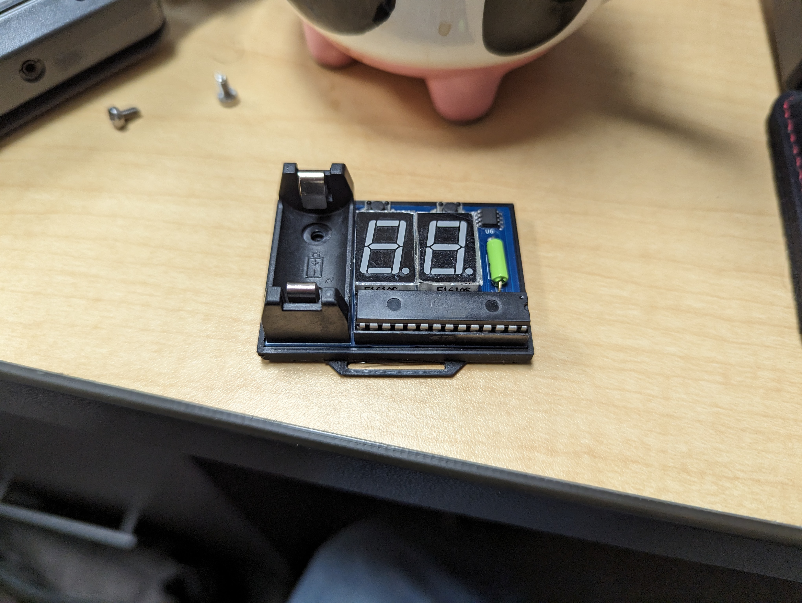
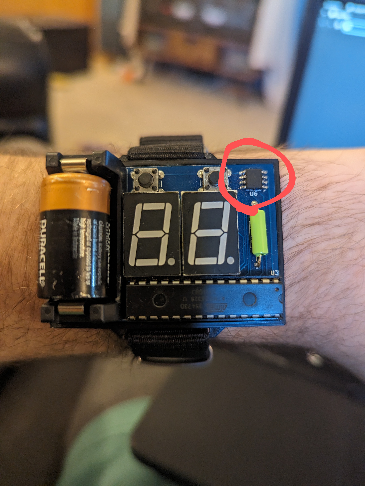
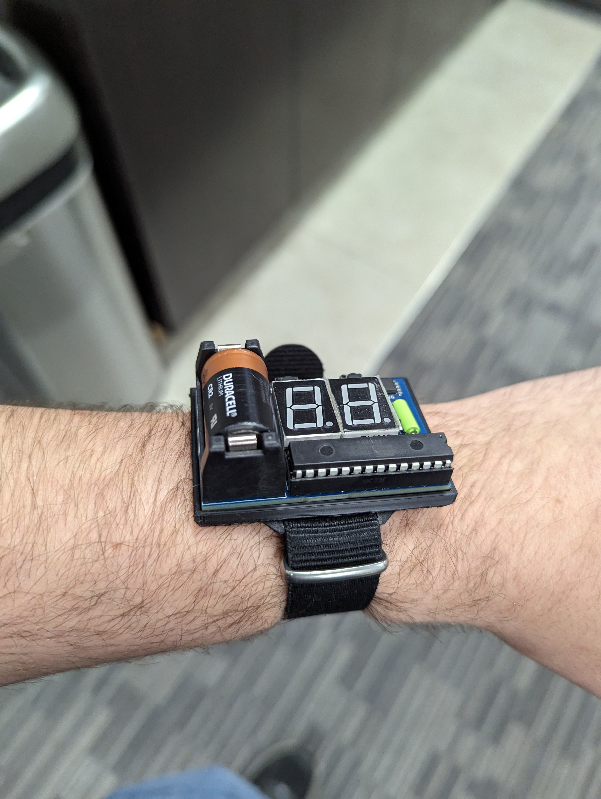
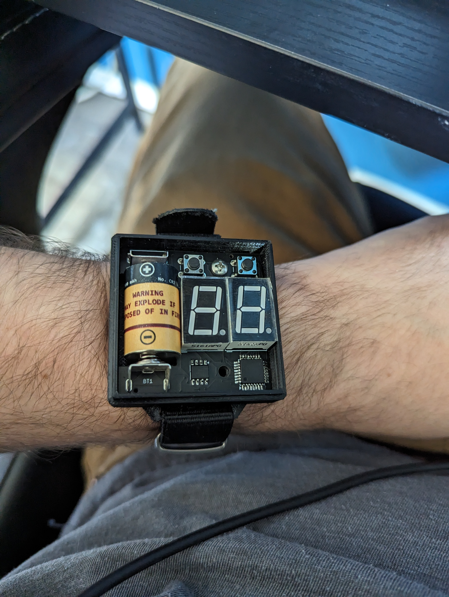
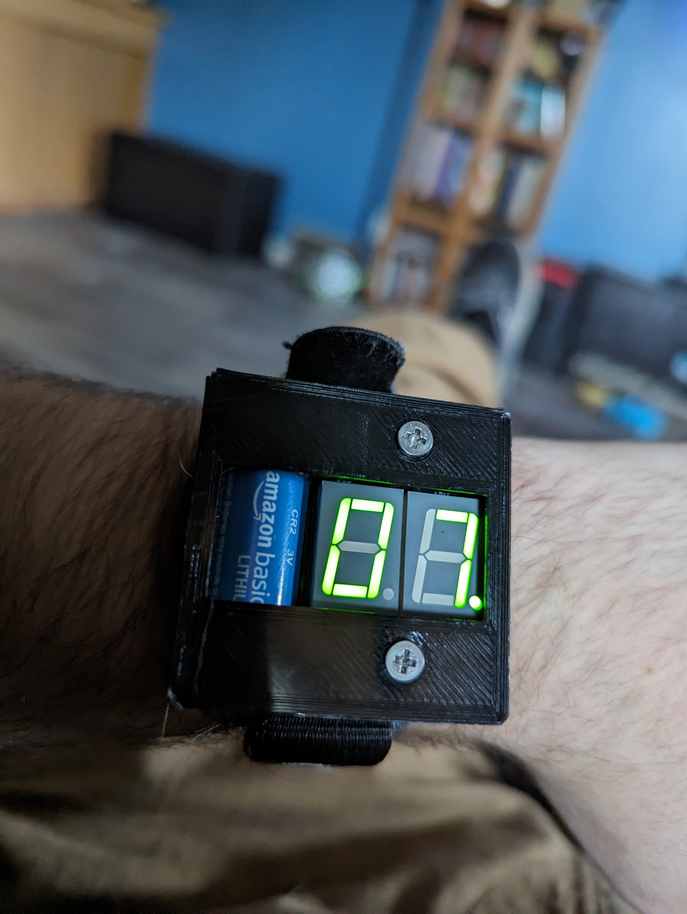
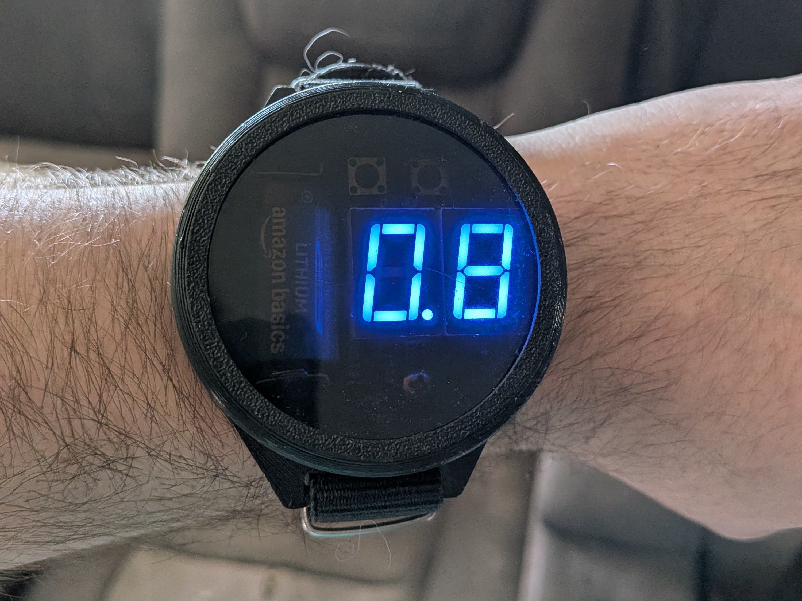

This started from an inspiration from the Nixie Watch by Cathode Corner. I loved the design, but I didn't love the price. I also wanted to learn more about embedded development, so this seemed like a perfect project to take on. This project was actually my first attempt at building something from the ground up. I had done some tinkering with Arduinos in the past, and I had some experience with embedded development from my job, but I had never done PCB design, schematic capture, or mechanical design.
The design goals were pretty simple:
Since this was to be inspired by the Nixie watch, I wanted to have a similar display. I went with a 7-segment display instead of nixie tubes primarily for cost reasons. Nixie tubes are no longer made and existing ones are quite expensive. Plus 7-segment displays still look super cool. They also have the added benefit of being able to be driven at the same voltages as the microcontroller.
For this project, I didn't really do any extensive research on microcontrollers. I went with the ATMega328 microcontroller for a few reasons:
And that's really it. I did take a peek at like the PIC series of MCU, but since this was my first time doing a project like this, I wanted to go with something that was as easy as possible to work with.
This design was entirely digital using TinkerCad. It was mostly to validate that I could drive the 7-segment display with the microcontroller and to get a feel for how the logic should work. It also helped me figure out how to show/hide the display when the watch wasn't being looked at. It also let me test out using a shift register to drive the LEDs with fewer pins. I designed this a long time before I did this write-up so I don't have any screenshots
I actually got most of the firmware working in TinkerCad before I even designed the first PCB, which was super helpful for when I actually started building the hardware. I think this gave me a false sense of security on whether or not the firmware was actually going to work, but at least it was a good starting point.
Since this was 100% virtual, there was no mechanical design aspect to this "revision."

This was my first real PCB design. It used entirely through-hole components. I cannot stress enough that this design was terrible. It did not use an IMU, but rather two tilt sensors, with the idea here being one would be used to detect if arm was raised, and another to detect if your arm was turned towards your face. It did not include a Real-Time Clock (RTC) module, and it used the microcontroller's internal clock, which was very inaccurate. It also did not use the correct footprints for the components I selected, which made assembly super annoying. To compound the issues further, I accidentally separated the ground plane into two separate planes, which meant it didn't work until I bridged them together.

Some other mistakes I made with this design were that I tried to drive the two 7-segment displays with a single shift register and multiplexing. This worked, but the LEDs were very dim as a result. I also made the mistake of assuming that the 7-segment display only needed a single resistor for the common cathode, when in reality, each segment needed its own resistor. I also for whatever reason decided the push buttons need pull down resistors, rather than just using the internal pull-ups. This was fixed in later revisions of the board.
So yeah, to summarize, this design was a mess. It technically worked, but it was very inaccurate, and looked like crap. This design sucked so bad that I basically gave up on the project for like a year.
Largely just copy and pasted the TinkerCad code and flashed it. For Rev0 and Rev1, since I used socketed DIP package ATMegas, I used a ZIF hat and an Arduino UNO to flash the firmware. Basically one of these guys:

I never bothered to design an enclosure for this design since it was so bad. It just wasn't worth the effort. All I do with this now is have it mounted on a 3D printed display stand to show the progression of the designs.


This design was much better. I added an RTC chip for accurate timekeeping, added a second shift register so that each digit was driven independently without multiplexing, and removed one of the push buttons along the top (the orignal idea was to increment or decrement the digits, with the center button being "select" or "OK"). I also removed one of the tilt sensors, as it turned out the sensor for detecting if the arm was raised was both unreliable, and also not super necessary. Finally, I switched to using surface mount components for all the passives. This made the board look much cleaner, and it was easier for me to determine which footprints were the actually correct ones.

This design ended up working actually pretty well. The timekeeping was accurate, the LEDs had consistent brightness across all their segments, and the watch more-or-less correctly detected when it was being looked at.
One "mistake" I made that I learned much later is how I wired up the shift registers. I didn't really realize that you could daisy chain them together (or at least I didn't understand how it worked at the time), so each register had a separate latch and data pin. This ended up carrying through the rest of revisions. It works, but it added two extra pins that I didn't really need to use.
This revision actually had a fair amount of firmware changes to accommodate the new hardware. Because of the second shift register, there was no longer any need for mulitplexing. You just set the value for each digit independently, and then toggle the pin that drove the common cathode to update the display. Since this design also included an RTC chip, I had to write the i2c interface for reading and writing to it. I didn't actually write the code that actually interacts with the bus from scratch, I ended up finding a library online. Although the datasheet for the microcontroller has a great code stub to get you started if you wanted to write it yourself.
The RTC that I put on the watch (DS3231) uses Binary-Coded Decimal (BCD) format for storing the time, and returns the result across 3 bytes. With seconds, minutes, and hours each being stored in a separate byte. I wrote a set of unions to make it easier to parse the bits in the byte, so that you can just access it as a normal decimal number rather than having to do bit manipulation every time you want to read the time (I also learned later that doing type-punning like this is undefined behavior in C++, but this was written in C, so it was fine).
The "enclosure" for this design wasn't particularly great, but it was functional. It was basically a tray with no top, and the PCB just screwed down to the bottom of the tray. It was held onto your wrist using a standard NATO-style wrist strap. Because there was no top, the face was just the exposed PCB, which actually looked pretty cool, but it also meant the watch was not very durable, and it was easy to accidentally lose the battery (and I did this multiple times).
At the time, I was using AutoDesk SketchUp for web. I had never done any 3d modeling before, and I found SketchUp to be pretty easy to use. I also didn't have a 3d printer at the time, so I got permission to use the 3d printer at my work. It was an Ultimaker S5, and for the price, I would have expected the print quality to be a lot better. But it was functional, and I was able to wear the watch until I designed the next revision, so I can't complain too much.


Rev2 was designed as a strict improvement over Rev1. The main change I made here was replacing the tilt sensor with an IMU. The tilt sensor worked pretty well, but it rattled and was annoying to listen to. I also shifted to using an SMD package for the microcontroller, as well as using less bulky battery contacts. This board again had all the passives pre-assembled by the fabricator, but I still need to assemble the battery contacts, buttons, LEDs, microcontroller, and RTC myself.
A big mistake I made with this design was that I did not put a programming header on the board. I did include pads, but they required soldering wires to them in order to program the board, which was a huge pain. I didn't include an actual header on the board because my monkey brain told me that it had to be the same as the ICSP header on the Arudino Uno, which was way too bulky to include.
Since this design included an IMU instead of the tilt sensor, it once again required some changes to the firmware. Thankfully, the RTC logic didn't change at all. Although, if I remember correctly, I actually accidentally reversed the digit display pins for this design, so I had the second digit labelled as the first and vice-versa. It wasn't problematic, just required swapping the assignment in the code.
The IMU was actually pretty complicated to get configured. I ended up just working off an example configuration from STM. Thankfully, their pre-defined configuration was basically exactly what I needed and I just needed to adjust the angle threshold for detecting when the watch was being looked at.
The first enclosure for this design was more or less the same as the Rev1, where it was a a tray with no top. However, because this PCB was physically smaller, and the battery contacts were also smaller, I was able to design a shell that had a top. The first pass at the shell with a top had a face that was screwed in from the front. It held on really well, but kinda looked like crap.

The second pass at the shell with a top used a friction-fit lid. This made the watch look more like an actual watch. However, because the lid was only held on with friction, it was still possible to accidentally pop it off and lose the battery. Although, the contacts held on much tighter, so this was significantly less likely to happen. It still used a NATO-style wrist strap.
I was still using SketchUp at the time this was designed, and I think the design turned out pretty well. However, by this point in time I had my own 3d printer (Bambu Lab P1S), so I was able to iterate on the design much faster. Weirdly enough, my 3d printer was actually able to produce much better print quality than the Ultimaker S5 at work, despite being a fraction of the price. I did later re-design pretty much the same shell in FreeCAD, but I never ended up printing it, so I don't have any pictures of it. The design was generally the same, but just done with proper CAD software.
This is the current design, and is mostly just a visual improvement over Rev2, with the same functionality. The biggest change I made was moving all SMD components to a single side of the board, which made it so all of them (including the microcontroller and RTC) could be pre-assembled by the fabricator for the same assembly cost as the Rev2. The PCB itself was changed to be circular rather than rectangular, which actually ended up shrinking the footprint by a little bit. I also got over my monkey brain and realized that the header form factor didn't matter as long as the pins were routed correctly, so I added a small JST header for programming, which is a huge quality of life improvement over having to solder wires to pads every time I wanted to program the board.
The only other noteworthy change I made was adding a test point so I can attach a multimeter in line and measure the current draw. If I didn't want to measure the current draw, I could just bridge it with a 0 ohm resistor. This was mainly added for my own curiosity, but it could also be useful for optimizing power consumption in the future.
There's not really a whole lot to say here. The hardware was identical to the Rev2 (aside from the microcontroller being in a smaller package), so the firmware was exactly the same. I think I might have made some tweaks to the code like being able to adjust the tilt angle, which I ended backporting to the Rev2 firmware as well. But other than that, this was pretty much copy and paste.
The initial enclosure for this design built off the same concept as the final design for the Rev2, where it was a tray with a friction-fit lid, just circular rather than rectangular. That design lasted all of about a day before I got fed up with it. The final design used a screw-on lid, which made it much more secure, and pretty much guaranteed that you wouldn't lose the battery. Like the other 2 designs, it used a NATO-style wrist strap.

Thankfully at this point, I had moved over to using FreeCAD entirely and ditched SketchUp. FreeCAD was a bit more of a learning curve, but had much better features and design options. I would never have been able to design the screw-on lid in SketchUp, but it was pretty easy to do in FreeCAD. I was also able to add fillets to the corners of the design, which was not an easy thing to do in SketchUp.
Overall, this project is basically finished. I don't think I have any future plans to make any changes to the design of this project. I'm pretty happy with how it turned out, and I think it looks pretty cool. I have considered trying to do some optimzations to the firmware to try and improve the battery life, but I just haven't been able to find the motivation to do it.
I did also consider making a similar version of the watch that would remove the IMU entirely, and just display the time when you press a button. This would be a much more power-efficient design, but would require two hands to operate. I might end up going through with this design at some point just for fun, but I don't have any immediate plans to do it.